문 앞에서 멈추지 않고,
고인물처럼 싸우는 봇
Bots that don't freeze at doors, and fight like veterans
SAIN zzap은 Solarint의 봇 AI 모드 SAIN(v4.5.1, SPT 4.1)을 고친 포크입니다. 봇이 문 앞에서 낑기는 버그를 고치고, 실제 고인물 플레이를 흉내 낸 전술을 넣고, 바로 쓰는 프리셋을 같이 담았습니다. SAIN zzap is a fork of Solarint's bot AI mod SAIN (v4.5.1, SPT 4.1). It fixes bots getting stuck at doors, adds tactics modelled on how veteran players actually fight, and ships presets you can use right away.

이 포크가 하는 세 가지Three things this fork does
원본 SAIN 위에 고친 것과 더한 것을 크게 셋으로 나눴습니다. 전술은 전부 SAIN 전투 레이어 안의 판단이라 ORBIT과 수정 없이 같이 돌아갑니다.Everything on top of upstream SAIN falls into three groups. All tactics are decisions inside SAIN's own combat layer, so ORBIT works with them unchanged.
문 앞에서 낑기지 않게No more stuck at doors
문 감지 범위, 끼임 확인, 대기 상태의 문 조작, 문 상태 감시까지 원본에 남아 있던 문 버그 4개를 고쳤습니다. 열린 문짝은 돌아서 지나가고, 벽에 계속 박는 봇은 단계별로 빼냅니다.Four door bugs still in upstream are fixed: detection range, stuck check, door use while idle, and a door-state watchdog. Bots walk around open door leaves, and a staged watchdog frees bots that keep walking into walls.
수정 목록 →See the fixes →고인물 플레이를 흉내 낸 전술Tactics from veteran play
점프 피킹, 페이크 수류탄, 다이아몬드 스텝, QEQE 기울이기 사격, 코너 추격, 분대 뒷문 협공. 상황마다 행동을 "기대 이득" 점수로 고르고, 성격마다 고르는 방식이 다릅니다.Jump peeks, fake grenades, diamond stepping, QEQE lean shooting, corner chases, squad back-door pincers. Each choice is scored by expected gain, and every personality picks differently.
전술 보기 →See the tactics →바로 쓰는 zzap 프리셋Ready-made zzap presets
쉬움·보통·zzap 세 난이도와 시뮬 전용 하나. 전부 ORBIT 권장 설정이 들어 있고, 고치면 원본 대신 [Modified] 사본으로 저장됩니다. F6와 웹 설정 화면은 한국어·영어를 모두 지원합니다.Easy, Normal and zzap, plus one for simulations. All four carry ORBIT's recommended settings, and edits are saved as a [Modified] copy so the originals stay intact. The F6 and web settings speak Korean and English.
봇이 하는 일What the bots do
대표 전술을 다섯 묶음으로 골랐습니다. 카드 아래 초록 표시는 그 행동을 하는 성격, 회색은 F6 설정 위치입니다. 전체 목록은 README 기능 표에 있습니다.A selection in five groups. The green tag on each card is who does it, the grey one is where to find it in F6. The full list is the feature table in the README.
점프 피킹Jump peek
복도에서 문 앞으로 점프해 방 안을 보고 바로 점프해서 복귀합니다. 닫힌 문은 문틀 옆에서 먼저 엽니다.Jumps across the doorway to see into the room and jumps straight back. Closed doors get opened first, from beside the frame.
런바이 피킹Run-by peek
낮은 천장·계단처럼 점프가 위험하면 문 앞을 달려 지나가며 보고, 총을 든 채 한 번 더 지나간 뒤 문에서 2~3m 각을 벌린 자리에서 지킵니다.Where jumping is risky (low ceiling, stairs) it sprints past the door, walks past again gun up, then holds the door from 2–3 m off the frame.
페이크 수류탄·치료Fake grenade & heal
수류탄 꺼내는 소리나 치료 소리만 내고 바로 집어넣습니다. 진짜 엄폐 뒤에 있을 때만, 뛰는 소리가 들리면 취소합니다.Makes the sound of drawing a grenade or healing, then puts it away. Only from real cover, and cancelled if it hears running.
방 진입Room clear
문틀 옆에 붙어 문을 열고, 페이크를 0~2번 섞은 뒤 진짜 수류탄을 던지고 폭발을 확인한 다음 돌입합니다. 수류탄 없이 짧고 강하게 대시하기도 합니다.Opens the door from the side, mixes in 0–2 fakes, throws a real grenade and enters after the blast actually happens. Sometimes a short, hard dash instead.
방 가두기·문 옆 매복Room trap & door ambush
거북이는 문 옆에 붙어 길게 지키고, 쥐는 낮은 자세로 조용히 기다립니다. "지키기"를 골랐고 적이 가까운 문 너머에 있으면 아무 데서나 멈추지 않고 그 문 옆에 붙습니다.Turtles hug the frame and hold for a long time; rats wait low and quiet. When "hold" is chosen and the enemy is past a nearby door, the bot holds that door instead of stopping anywhere.
몸통박치기Sprint ram
방 진입·도망·돌격·수색 중 닫힌 문을 달려와 박차 열고 그대로 지나갑니다. doordash·DualSideDoorBreach 코드를 봇 전용으로 옮겨 와서 두 모드가 없어도 됩니다.Bursts through closed doors at a sprint while clearing, escaping, rushing or searching. Code ported bot-only from doordash and DualSideDoorBreach, so neither mod is needed.
다이아몬드 스텝Diamond step
쏘는 중에 WASD를 와다다 누르듯 0.13초씩 끊어 움직입니다(좌우 60%·앞뒤 40%). 누르려는 쪽이 벽이면 열린 쪽으로 틉니다.While shooting it taps WASD in 0.13 s bursts (60% sideways, 40% forward/back). If that way is a wall it turns toward open space.
QEQE 기울이기 사격QEQE lean shooting
적이 움직이는 쪽으로 0.35~1초 기울이고, 반대로 틀면 따라 바꿉니다. 중간중간 Q/E 연타를 섞습니다(7m 안 45%).Leans toward the side the enemy moves to for 0.35–1 s and switches when they do. Q/E spam is mixed in (45% within 7 m).
코너 흔들기 피킹Corner jiggle peek
A↔D를 빠르게 번갈아 눌러 벽 뒤로 0.18~0.32초 숨었다가 0.25~0.45초 드러나며 쏩니다. 실제로 가려지는 쪽이 있을 때만 합니다.Swaps A↔D fast: hidden 0.18–0.32 s, exposed 0.25–0.45 s while firing. Only when one side really gives cover.
코너 추격Corner chase
적이 코너 뒤로 빠지면 기울인 채 진입, 넓게 돌기, 점프샷, 프리파이어 중 하나로 쫓습니다. 프리파이어는 탄이 충분할 때만 합니다.When the enemy breaks behind a corner it follows with a lean-in, a wide pie, a jump shot or a prefire — prefire only with enough ammo left.
코너 선조준Corner pre-aim
적이 나올 코너 6m 안에서는 달리기를 멈추고, 벽 모서리가 아니라 코너 너머 적이 나올 자리를 먼저 조준합니다.Within 6 m of the corner it stops sprinting and pre-aims where the enemy will appear, not the wall edge.
붙으면 엄폐 대신 싸움Fight close, don't run
8m 안의 적이면 엄폐로 걸어가지 않고 계속 싸웁니다. 맞는데 가까운 엄폐물이 없으면 개활지를 등 보이며 뛰지 않고 그 자리에서 교전합니다.Within 8 m it keeps fighting instead of walking to cover. Taking fire with no cover nearby, it fights where it stands instead of sprinting across open ground with its back turned.
안 보이는 적 판단Hidden-enemy decision
위치는 아는데 안 보이는 적에게 밀기·수류탄·지키기·우회·수색·후퇴를 "기대 이득"으로 점수 매기고, 점수로 가중치 준 주사위로 고릅니다. 아래 예시에서 직접 굴려 볼 수 있습니다.For an enemy it knows about but can't see, it scores push, grenade, hold, flank, search and retreat by expected gain and picks with a score-weighted roll. Try it in the demo below.
보이는 적 판단Enemy-in-sight decision
계속 쏘기·엄폐로 빠지기·밀어붙이기를 노출 시간, 체력·탄창, 가까운 엄폐 거리, 총과 거리 궁합으로 고릅니다. SAIN의 "N초 버티고 엄폐" 고정 규칙을 대신합니다.Keep shooting, fall back to cover or push — weighed by exposure time, health and ammo, distance to cover and how the gun suits the range. Replaces SAIN's fixed "hold N seconds, then cover" rule.
재장전·치료 타이밍Reload & heal timing
적이 나를 보는 중이면 참고 쏘고, 틈이 나면 장전합니다. 엄폐 중이고 위협이 멀면 치료하고, 수술은 정말 안전할 때만 합니다.If the enemy is watching, it keeps firing and reloads in the gap. It heals in cover when the threat is old or far, and only does surgery when truly safe.
장비에 맞는 교전Gear-aware fighting
든 총으로 선호 거리를 계산합니다. 저격총은 거리를 유지하고, SMG·샷건은 붙어서 싸웁니다. 수류탄·치료템 개수도 판단에 들어갑니다.The weapon in hand sets the preferred range: snipers keep distance, SMGs and shotguns close in. Grenade and med counts feed the scores too.
두려움·사람 같은 실수Fear & human mistakes
동료가 죽거나 연속 킬을 당하면 두려움이 올라 후퇴·지키기를 더 고르고, 0.75를 넘으면 패닉합니다. 가끔 최선 대신 2·3순위를 고릅니다(Timmy 12% ~ GigaChad 2%).Losing teammates or facing a killing streak raises fear, so retreat and hold get picked more; above 0.75 it panics. Now and then it picks the 2nd or 3rd best (Timmy 12% down to GigaChad 2%).
위협 기준 목표 선택Threat-based targeting
지금 나를 쏘는 적이 원래 목표보다 위험하면 안 보여도 그쪽으로 바꿉니다. PMC끼리 싸우다 스캐브가 나오면 둘 다 스캐브만 쏘던 "티밍"을 막습니다.If someone shooting at it is a bigger threat than its current target, it switches — even if unseen. Stops two PMCs from both turning on a scav mid-fight.
분대 역할Squad roles
한 명이 문 전술을 하면 동료는 오버워치(교차 각)나 후방 경계를 맡습니다. 벽이 조준선을 막으면 조준선이 열리는 자리로 옮깁니다.When one bot runs a door tactic, the others take overwatch (crossing angle) or rear guard, shifting until they have a clear line.
뒷문 협공Back-door pincer
실내면 적이 있는 방의 다른 입구를 먼저 막고, 15초 동안 안 나오면 뒷문으로 치고 들어가 앞뒤로 협공합니다.Indoors it first covers the room's other entrance; if nobody comes out within 15 s it storms through the back door for a front-and-back pincer.
약한 적 일제 돌격Storm the weak
20초마다 적을 평가해 방탄 없음·부상·장전이나 치료 중·혼자 같은 약한 적이면 분대가 다 같이 뛰어가 진압합니다.Every 20 s the squad rates the enemy; no armour, wounded, reloading or healing, alone — then they all rush together.
보복Trade the kill
동료를 실제로 죽인 적을 추적해 다른 판단보다 먼저 보복합니다. 공격형은 그 자리로 밀고, 신중형은 각을 잡습니다.Tracks whoever actually killed a teammate and trades first. Aggressive bots push the spot, careful ones hold the angle.
아군 사선 회피Fire-lane guard
동료가 쏘는 사선 안으로 걸어 들어가지 않고, 이미 들어가 있으면 옆으로 빠집니다. 쏘는 쪽도 0.3초 뒤 동료 위치를 예측해 멈춥니다.Won't walk into a teammate's line of fire and steps out if already in it. The shooter also predicts where teammates will be 0.3 s ahead and holds fire.
전투 후 정리Post-combat tidy-up
싸움이 끝나면 엄폐로 이동해 장전·치료·경계를 하고, 성격 확률로 킬 자리를 확인하러 갑니다. ORBIT에 넘기기 전 15초 동안 바닐라 행동으로 떨어지던 빈틈을 메웁니다.After a fight it moves to cover, reloads, heals and watches, then — by personality — checks the kill spot. Fills the 15 s gap where bots used to fall back to vanilla before ORBIT took over.
발소리 관리Footstep discipline
안 보이는 적에게 다가갈 때 30m 안에선 걷고, 12m 안에선 숙여 걷습니다. 루팅 중인 적에게는 항상 조용히 갑니다.Approaching an unseen enemy it walks inside 30 m and crouch-walks inside 12 m — always quietly toward someone looting.
취약한 순간 돌격Punish the reload
장전·치료·수술·루팅 소리를 들으면 그 시간 안에 닿을 수 있을 때만 돌격합니다. 수류탄 꺼내는 소리에는 오히려 물러납니다.Hearing a reload, heal, surgery or looting, it rushes only if it can get there in time. A grenade being drawn makes it back off instead.
먼 총소리 3단계Distant gunfire tiers
100m 안은 그 자리 수색, 100~250m는 고개만 돌리고, 250m 밖은 무시합니다. 나를 향해 쏜 사람에게는 거리와 상관없이 반응합니다.Within 100 m it searches, 100–250 m it only looks, beyond 250 m it ignores. Being shot at always gets a reaction, at any range.
층 차이 소리Floor-aware hearing
실내에서 한 층 위아래 발소리는 절반, 총소리는 조금 작게 들립니다. 문 전술 중에도 다른 층 발소리에는 흔들리지 않습니다.Indoors, footsteps one floor away sound half as loud and gunfire a bit quieter. Door tactics aren't broken off by footsteps on another floor.
빛 관리Light discipline
안 보이는 적에게 각을 잡을 때는 플래시·레이저를 끄고, 적이 보이는 순간 켜서 눈뽕을 줍니다.Holding an angle on an unseen enemy it kills the flashlight and laser, then lights you up the moment you appear.
수류탄 판단Grenade judgment
던질 궤적이 실제로 있는지 먼저 확인합니다(적 위치 → 경로상의 코너 → 열린 문 안쪽으로 굴려 넣기). 자기 폭발에 닿을 자리면 던지지 않습니다.Checks a real throw arc exists first (enemy spot → corner on the path → rolled through an open door). Never throws where its own blast could reach it.
점수는 이렇게 매깁니다How the score is built
- 정보가 얼마나 신선한지, 적이 각을 잡는 중인지 다가오는 중인지How fresh the info is, and whether the enemy is holding an angle or closing in
- 내 체력·탄·수류탄, 수적 우위, 적 장비와 장전·치료 여부My health, ammo and grenades, numbers, the enemy's gear and whether they're reloading or healing
- 적이 조용한 시간 — 시간은 존버하는 쪽 편입니다How long the enemy has been quiet — time favours whoever is camping
- 성격: 렉리스는 느슨하게, 쥐·겁쟁이는 거의 최고점만 고릅니다Personality: Wreckless rolls loosely, Rat and Coward almost always take the top score
- 맞는 중이면 제자리 "지키기"는 건너뜁니다While being hit, standing still to "hold" is skipped
왼쪽 숫자는 이해를 돕는 예시입니다. 실제 점수와 이유는 게임 로그의 [Utility] 줄에 남습니다.The numbers on the left are illustrative. Real scores and reasons are written to the game log as [Utility] lines.
게임에서 찍은 장면Caught in game
시뮬레이션 랩에서 봇끼리 싸우게 두고 프리캠으로 녹화한 짧은 장면입니다. 봇 위의 작은 상자는 개발용 표시입니다.Short clips recorded in free cam while bots fought each other in the Simulation Lab. The small boxes over bots are a developer overlay.
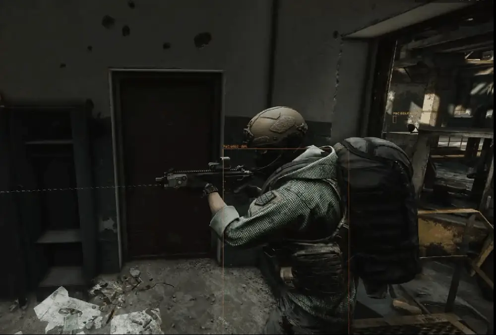
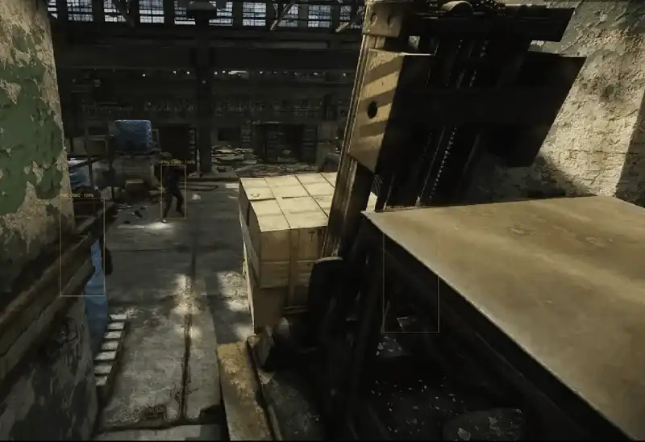
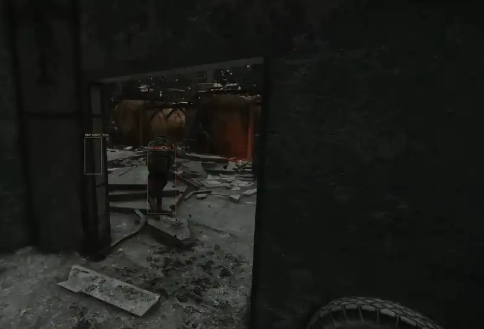
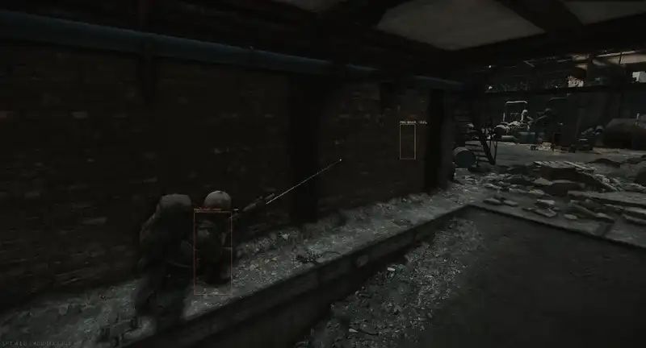
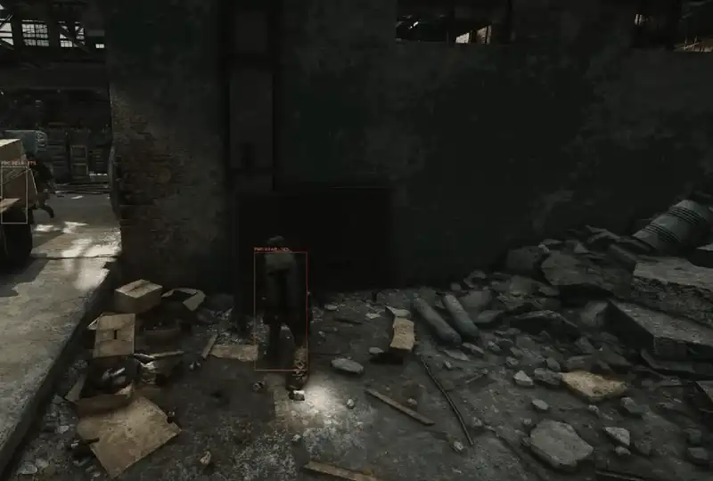
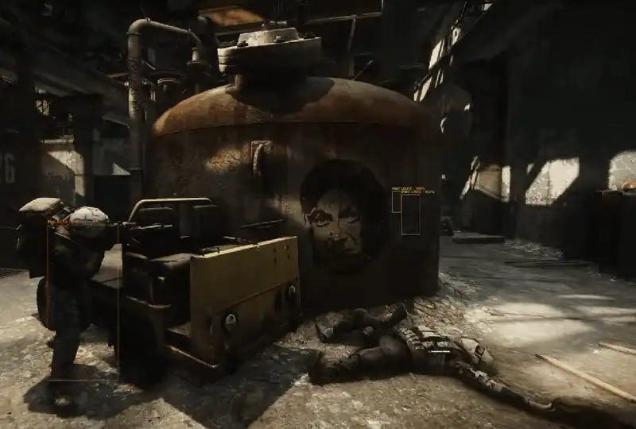
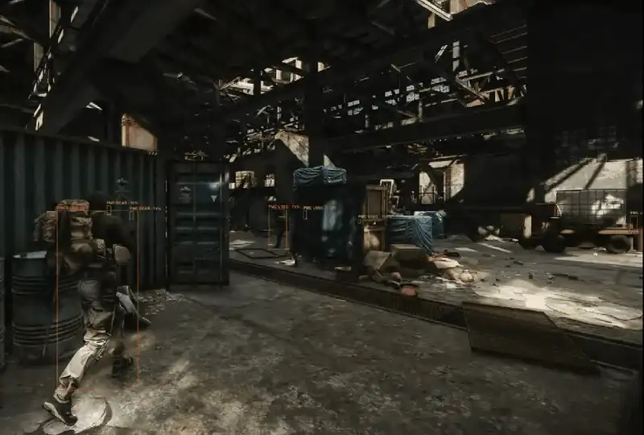
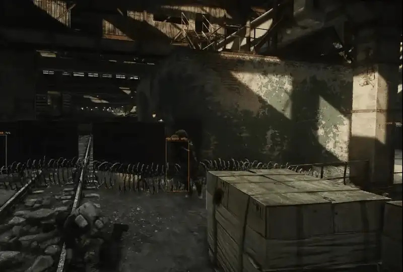
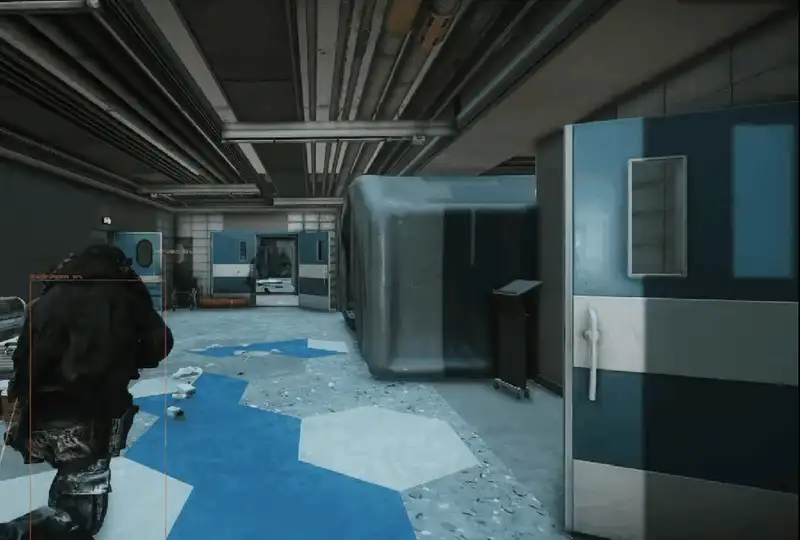
판을 거듭하며 내 버릇을 배웁니다It learns your habits, raid after raid
기본으로 켜져 있습니다. 사람 플레이어를 상대할 때만 작동하고 봇끼리 싸울 때는 영향이 없습니다.On by default. It only applies against human players, never bot-vs-bot.
스타일 기록Record your style
레이드마다 움직이는 시간, 움직이며 쏜 비율, 점프, 기울이기 피킹, 수류탄, 한자리 존버 시간, 킬·사망 거리를 숫자로 남깁니다.Each raid stores numbers: time moving, shots on the move, jumps, lean peeks, grenades, time camping, kill and death distances.
스타일에 맞춰 대응Adapt to it
- 뛰어다니며 공격적 → 코너에서 기다렸다 붙어서 싸움Aggressive runner → waits at corners and fights close
- 버니합이 많음 → 다가올 코너를 지킴Lots of bunny hops → holds the corner you'll come round
- 기울이기 피킹이 많음 → 기울이기로 맞받아침Lots of lean peeks → leans back at you
- 수류탄을 많이 씀 → 봇끼리 간격을 벌림Heavy grenade use → bots spread out
결과로 학습Learn from results
봇이 나에게 한 대응마다 결과를 채점합니다. 나를 맞히면 성공, 나에게 죽으면 실패. 판을 넘어 쌓여서 잘 통한 대응은 더 자주, 실패한 대응은 덜 고릅니다.Every response a bot tries on you is scored: hit you = success, died to you = failure. Scores carry across raids, so what works gets picked more and what fails gets picked less.
General › Player Style Recorder (zzap).No cheating. Bots never "see" you during a raid; only stats from finished raids are used. Your gear is ignored (it could be dev-tool gear). It starts after 10 minutes of recorded play and reaches full strength around 60 minutes. Turn off in F6 → General › Player Style Recorder (zzap).문 앞 끼임부터 걷는 시체까지From door jams to walking corpses
이 포크가 시작된 이유는 문이었습니다. 원본 v4.5.1에도 그대로 남아 있는 문 버그를 고치고, 오래 돌려 보며 찾은 버그를 계속 고쳤습니다.This fork started with doors. The door bugs still present in upstream v4.5.1 are fixed here, along with everything long test runs turned up since.
문 앞 낑김Stuck at doors
문 감지 범위, 끼임 확인, 대기 상태의 문 조작, 1.2초 문 상태 감시를 고쳤습니다.Door detection range, stuck check, door use while idle, and a 1.2 s door-state watchdog.
벽에 계속 박기Walking into walls
원본의 끼임 해제가 통째로 꺼져 있었습니다. 3초 경로 재계산 → 5초 점프 → 8초 다음 지점 → 14초 초기화로 빼냅니다.Upstream's unstick was switched off entirely. Now: re-path at 3 s, jump at 5 s, next waypoint at 8 s, reset at 14 s.
무기 핑퐁Weapon ping-pong
주무기↔보조무기↔권총을 1~2초마다 왕복하던 것. 이제 탄이 있는 총으로만 바꿉니다.Bots swapped primary ↔ secondary ↔ pistol every 1–2 s. They now only swap to a gun that has ammo.
걸어 다니는 시체Walking corpses
사망 처리 중 다른 모드가 오류를 내면 래그돌이 안 생겨 몸이 미끄러지던 것. 1.5초 넘게 시체가 없으면 직접 처리합니다.If any mod threw during death handling, no ragdoll spawned and the body slid around. After 1.5 s without a corpse it is handled directly.
피 자국 메모리 누적Blood-decal memory
시체의 피·총알 자국 텍스처를 레이드 끝까지 들고 있어 20분에 약 3GB가 쌓였습니다. 죽은 지 30초 뒤 반납합니다.Corpse blood and bullet-hole textures were kept all raid — about 3 GB in 20 minutes. They're returned 30 s after death.
프리셋 섞임Preset mix-up
목록을 불러올 때 마지막으로 읽은 프리셋의 전역 설정이 적용되던 것. 고른 프리셋으로 고정합니다.Loading the list applied the global settings of whichever preset was read last. The chosen preset now sticks.
F6와 웹, 같은 화면 · 한국어와 영어F6 and web, same screens · Korean and English
게임 안 F6와 서버 웹 페이지(127.0.0.1:6969/sain)가 같은 설정을 씁니다. 아래 그림은 실제 화면을 녹화한 것이고, 위쪽 한/EN 버튼을 누르면 그 언어 화면으로 바뀝니다.The in-game F6 editor and the server web page (127.0.0.1:6969/sain) share the same settings. These are recordings of the real screens; the 한/EN switch at the top swaps them to that language.
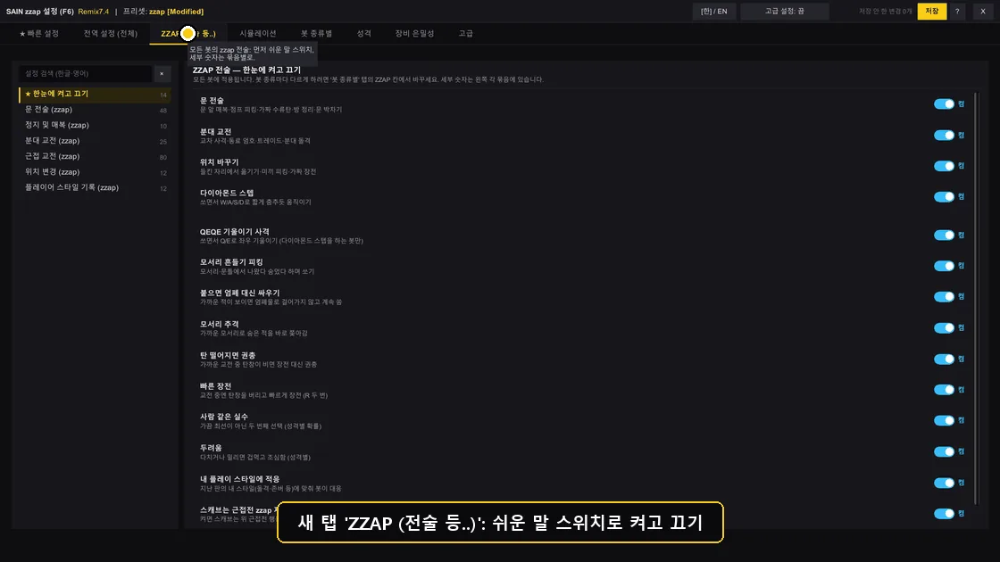
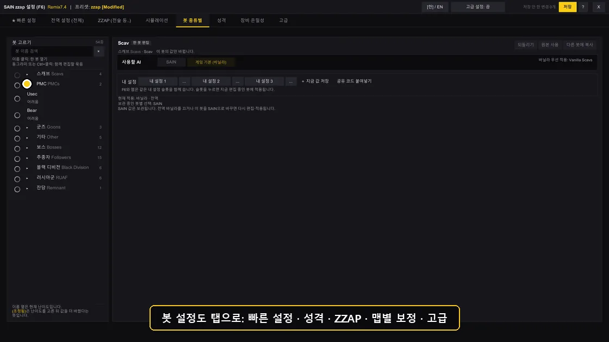
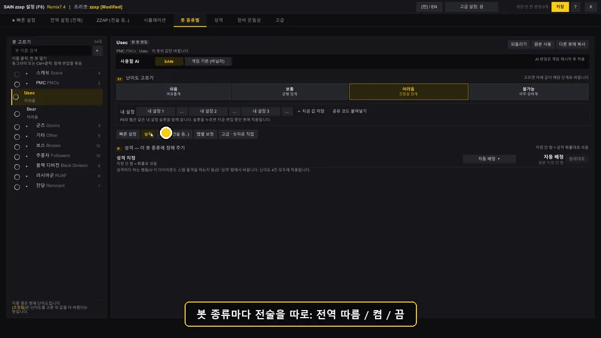
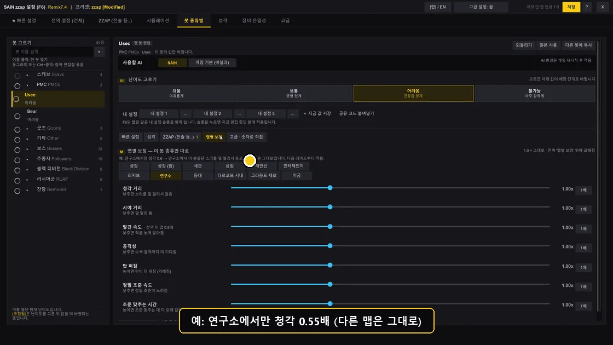
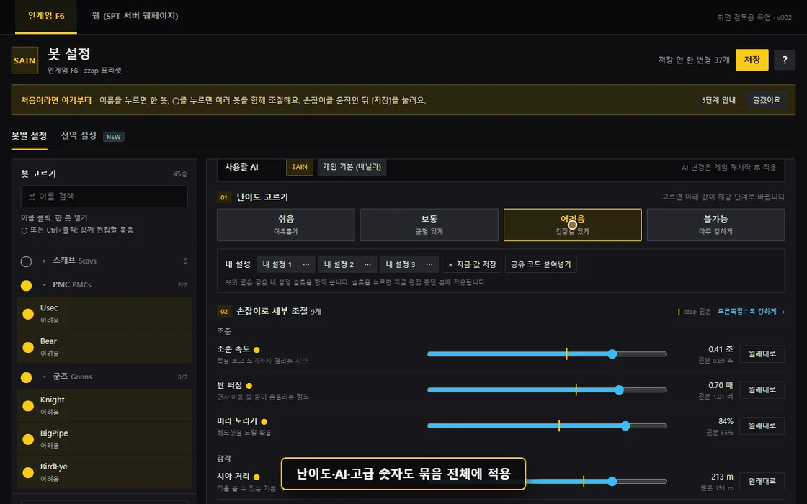
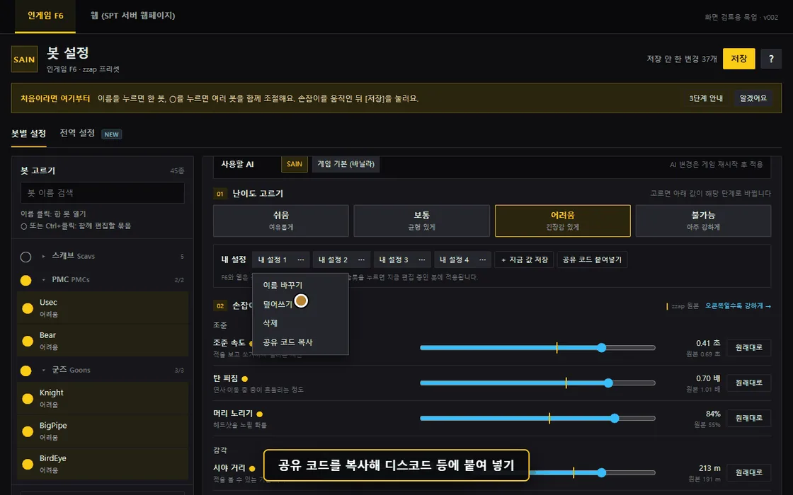
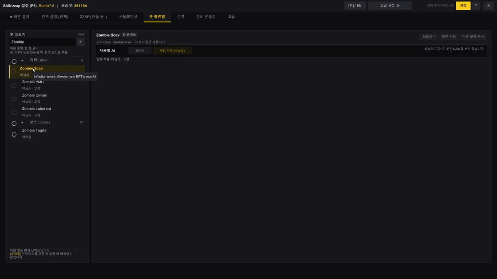
바닐라 · 고정으로 보입니다.Ordinary zombies stay vanilla. The four infection-event zombies always run EFT's own AI and show as vanilla · fixed in the list.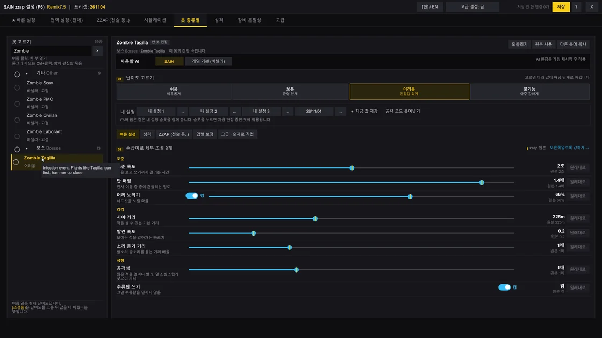
Remix7.3 봇 설정 전체 녹화 보기 (GIF, 약 5.6MB)Watch the full Remix7.3 bot settings recording (GIF, ~5.6 MB)
Remix7.5 좀비·스머글러 설정 화면 보기 (GIF, 약 150KB)See the Remix7.5 zombie and smuggler settings (GIF, ~150 KB)
- 봇 고르기. 이름을 누르면 한 봇을 엽니다. ○ 또는 이름 Ctrl+클릭으로 묶음에 넣고 뺍니다(●선택, ◐팩션 일부).Pick bots. Click a name to open one bot. ○ or Ctrl+click adds or removes it from the selection (● selected, ◐ part of a faction).
- 난이도·손잡이. Easy~Impossible 중 하나를 고르고 손잡이 9개로 세부 조절합니다. 새 항목만·바뀐 항목만 보기, 항목별 원래대로가 있습니다.Level and knobs. Pick Easy to Impossible, fine-tune with nine knobs. New only, Changed only and per-setting Reset help you find things.
- 저장. 위 저장을 눌러야 게임에 적용됩니다. AI 변경은 게임을 다시 켠 뒤 적용되고, 맵별 보정은 다음 레이드부터입니다.Save. Press Save at the top to apply in game. AI changes apply after a game restart; per-map values from the next raid.
- 처음이라면. 오른쪽 위 ?를 누르면 3단계 안내가 다시 열립니다.New here? The ? at the top right reopens the 3-step guide.
zzap 프리셋 네 개Four zzap presets
전술 종류는 모두 같고, 나오는 빈도와 사격·시야 보정이 다릅니다. 처음 실행하면 한 번만 자동으로 zzap이 선택됩니다.All carry the same tactics; how often they fire and the aim and vision tuning differ. On first launch zzap is picked for you once.
전술 빈도를 크게 줄임(문 전술 ×0.5). 원본 SAIN "쉬움" 보정 — 반동 크고, 시야 거리 절반, 늦게 발견, 조준 최소 2초, 실수 2배.Tactics much rarer (door tactics ×0.5). Upstream "easy" tuning: heavy recoil, half sight range, slower spotting, 2 s minimum aim, twice the mistakes.
쉬움과 zzap의 진짜 중간. 문 전술 ×0.75, 반동 0.8, 시야 거리 1.4배, 시야각 160°, 연사는 zzap의 75%.A true middle between Easy and zzap: door tactics ×0.75, recoil 0.8, 1.4× sight range, 160° view, 75% of zzap's fire rate.
기본 프리셋. 사격·조준·반응은 원본 TwitchPlayers(하드코어) 값, 행동은 이 포크의 전술 전부.The default. Shooting, aim and reactions from the original TwitchPlayers (hardcore) values; behaviour is this fork's full tactic set.
기본Default실제 플레이용이 아닙니다. 봇끼리 싸우는 걸 프리캠으로 보는 시뮬레이션용 — 모든 PMC 문 전술 100%, 레이드 일지 켬.Not for real play. For watching bots fight each other in free cam: every PMC runs door tactics, raid journal on.
시뮬레이션 랩Simulation Lab이름 [Modified] 사본으로 저장되어 업데이트해도 남습니다.Tuned to run with ORBIT. All four use ORBIT's recommended personality mix and leave extraction to ORBIT. Editing a bundled preset saves a Name [Modified] copy that survives updates.서버 웹 페이지 · 시뮬레이션 랩Server web pages · Simulation Lab
SPT 서버가 켜져 있으면 브라우저에서 https://127.0.0.1:6969/sain으로 프리셋을 고치고, 시뮬레이션을 돌리고, 결과를 분석할 수 있습니다.With the SPT server running, open https://127.0.0.1:6969/sain in a browser to edit presets, run simulations and read the analysis.
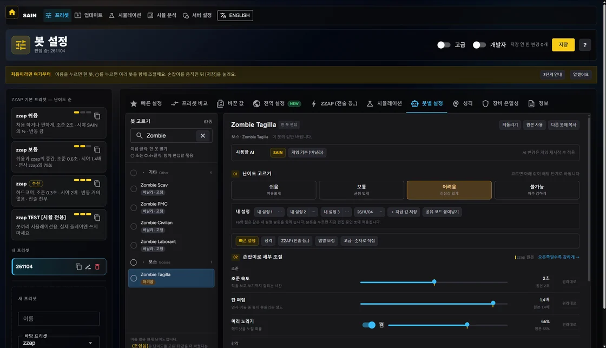
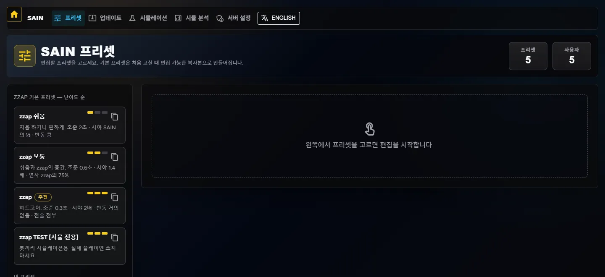
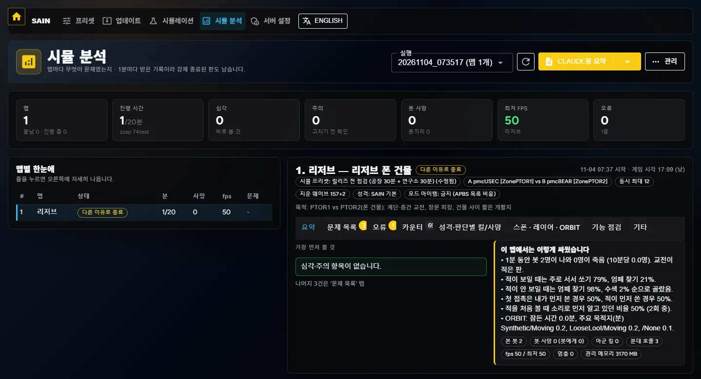
시뮬레이션 설정 페이지 보기See the simulation setup page
맵 순서·스폰·성격 분포·점검 스위치를 묶은 시뮬 프리셋 9개(기본 순회, 릴리즈 전 점검, 문 전술·박치기 점검, 성격 비교 등)를 골라 바로 돌립니다. zzap TEST [시뮬 전용] 프리셋에서만 작동하고, 실제 프로필로 레이드를 하므로 시뮬 전용 프로필을 권장합니다.Nine sim presets bundle map order, spawns, personality mix and check switches (full rotation, pre-release check, door tactics and ram check, personality comparison and more). Only active with zzap TEST [sim only]; it raids on a real profile, so use a dedicated sim profile.
기능보다 오래 걸린 일 — 가볍게, 안 무너지게What took longer than the features — light and hard to break
전술을 더하는 것보다 오래 돌려도 안 무너지게 만드는 데 시간을 더 썼습니다. 봇끼리 수백 판을 돌리고, 레이드가 끝날 때마다 누수 검사기로 메모리를 확인하고, 켬·끔을 같은 조건으로 재 가며 고쳤습니다. 아래 숫자는 모두 릴리즈 노트에 적은 측정값입니다. 어떻게 시험했는지는 다음 절에 있습니다.More time went into making it hold up over long sessions than into adding tactics: hundreds of bot-vs-bot raids, a leak check after every raid, and on/off runs under the same conditions. Every number below is a measurement from the release notes. How it was tested is in the next section.
최적화Performance
레이드 뒤 메모리 누수 두 번 잡음Two post-raid memory leaks fixed
두 번째 판부터 지난 판 전체(플레이어·장비·아이템)가 다음 판 내내 램에 남던 것, 메뉴로 나와도 지난 판 맵·봇 데이터를 붙잡고 있던 것을 고쳤습니다. 지금은 RAM 클리너 누수 목록에 SAIN이 나오지 않습니다.From the second raid on, the whole previous raid (players, gear, items) stayed in RAM through the next one, and SAIN held the last raid's map and bot data even in the menu. Both fixed — SAIN no longer shows up in the RAM Cleaner leak list.
시체 피 자국 텍스처 비우기Freeing corpse wound decals
EFT는 맞은 부위마다 자국 텍스처(개당 약 4MB)를 만들고 시체 것까지 레이드 끝까지 들고 있어, 사망이 많을수록 램·VRAM이 수 GB 늘었습니다. 죽은 지 30초 뒤 비우고 다음 피격에 다시 씁니다(F6 성능 메뉴에서 끌 수 있음).EFT makes a wound texture (~4 MB each) per hit and keeps corpses' too until raid end, so RAM/VRAM grew by GBs with deaths. They are cleared 30 s after death and reused for the next hit (can be turned off in F6 Performance).
안 쓸 글자는 아예 만들지 않음No text nobody reads
EFT는 레이드 중 메모리 정리를 꺼 두기 때문에 버린 글자도 끝까지 쌓입니다. 로그·진단을 꺼 두면 로그 문장 자체를 만들지 않고, 판단 이유 글은 일지를 켰을 때만 만듭니다 — 판단 쪽 메모리 쓰레기 4% 감소, 판단 결과는 같습니다.EFT turns garbage collection off during raids, so even discarded strings pile up. With logs and diagnostics off no log line is built at all, and the "why" text for decisions is only built with the journal on — 4% less decision garbage, same decisions.
무거운 연동은 넣지 않음Heavy integrations left out
Door Overhaul 연동(문 너머 사격·수류탄 문 폭파)은 그 모드가 분당 600MB 안팎을 써서 뺐습니다. 몸통박치기는 doordash·DualSideDoorBreach 코드를 봇 전용으로 직접 옮겨 와 두 모드 없이 돌아갑니다.The Door Overhaul bridge (shooting and grenades through doors) was dropped because that mod used ~600 MB per minute. The sprint ram ports doordash and DualSideDoorBreach code for bots only, so neither mod is needed.
켬/끔 같은 조건으로 재봄Measured on and off, same conditions
열린 문짝을 길에서 빼는 장치를 켠 판과 끈 판을 리저브 20분 같은 조건으로 비교했습니다. 평균 프레임은 둘 다 14.8ms(약 67fps), 차이는 봇이 처음 나온 뒤 15초 동안 0.08초 멈칫 2번뿐입니다.Raids with the open-leaf carver on and off were compared on Reserve, 20 min, same conditions. Average frame time 14.8 ms (~67 fps) both; the only difference was two 0.08 s hitches in the first 15 s after bots spawn.
오류 난 봇을 매 프레임 다시 보지 않음No per-frame retries on a failing bot
재장전 확인에서 오류가 나는 봇을 1초에 수백 번 다시 검사하느라 프레임이 무너지던 것을 고쳤습니다. 오류가 난 봇은 10초 동안 그 검사를 쉽니다.A bot whose reload check threw was re-checked hundreds of times a second and tanked the frame rate. A failing bot now skips that check for 10 s.
안전Safety
봇 하나의 오류가 전체를 세우지 않음One bot's error can't freeze the rest
봇 하나(Black Division 같은 커스텀 봇)에서 오류가 나면 뒤 순번 봇 전체의 AI가 멈추던 것을 봇마다 따로 격리했습니다. 죽음 처리도 하나씩 따로 실행하고, 체력 0인데 1.5초 넘게 시체가 안 생기면 직접 쓰러뜨립니다.An error in one bot (a custom one like Black Division) used to stop the AI of every bot after it; each bot is now isolated. Death handlers run one by one, and a bot at 0 HP with no corpse after 1.5 s is put down directly.
매 프레임 코드엔 끝나는 조건부터Every per-frame loop has an exit
실제로 게임이 멈춘 일이 있은 뒤로, 매 프레임·매 봇 도는 코드에 새 반복을 넣을 때는 끝나는 조건 + 최대 횟수 + 모의 실행 확인을 꼭 거칩니다. 문이 안 열리면 최대 4초만 기다리고 돌아가는 식으로 모든 대기에 상한이 있습니다.After a real game freeze, any new loop in per-frame or per-bot code must have an exit condition, a hard cap and a dry run. Every wait has a ceiling — a door that won't open is waited on for at most 4 s before the bot reroutes.
업데이트해도 내 설정은 그대로Updates don't touch your settings
기본 프리셋을 고치면 원본 대신 [Modified] 사본으로 저장되고, 내 설정 슬롯은 따로 파일에 둡니다. 새로 생긴 칸은 모두 '전역 따름'·'1배'로 시작해서 업데이트만 해서는 아무것도 달라지지 않습니다. 이전 판으로 돌아가려면 이전 7z를 덮어쓰면 됩니다.Edits to bundled presets are saved as a [Modified] copy and custom slots live in their own file. New settings start at "follow global" / 1x, so updating alone changes nothing. To roll back, extract the previous 7z over it.
시뮬 기능은 시뮬에서만Sim features stay in the sim
봇끼리 싸우게 하는 시뮬레이션 랩, 시체 실제 삭제, 봇 부품별 메모리 측정은 zzap TEST [시뮬 전용] 프리셋에서만 돕니다. 실제 플레이용 프리셋에는 아무 부담이 없습니다.The Simulation Lab, real corpse deletion and per-part bot memory probes only run with the zzap TEST [sim only] preset. Presets for real play carry none of it.
다른 모드가 기대는 이름은 안 바꿈Names other mods rely on are kept
ISB·Scourge가 실행 중에 이름으로 찾는 SAIN 코드, TwitchPlayers가 직접 부르는 서버 DLL 이름·폴더·버전(4.5.1)·API는 원본 그대로 둡니다. 같이 써도 되는 모드는 게임이나 코드로 확인한 것만 표에 올립니다.SAIN code that ISB and Scourge look up by name at runtime, and the server DLL name, folder, version (4.5.1) and API that TwitchPlayers calls, are left exactly as upstream. The compatibility table lists only mods checked in game or in code.
확인한 것만 확인했다고 씀Only what was checked is called checked
봇끼리 시뮬 1차 100판, 게임 안 시뮬 레이드, F8 장면 기록, 별도 AI(Codex) 코드 검토까지 거친 뒤에도, 직접 확인하지 못한 항목은 릴리즈 노트에 미검증이라고 적습니다. 빌드 성공을 게임 동작으로 치지 않습니다.100-raid first-stage bot sims, in-game sim raids, F8 scene marks and independent AI (Codex) code reviews — and anything still not seen working is marked untested in the release notes. A clean build is never counted as working in game.
측정 조건: 사용자 PC(RAM 64GB), 숫자 옆에 적은 맵·시간·판 수 기준. zzap 프리셋은 원본 SAIN 기본 프리셋보다 전투 쪽에 무게를 둬서 프레임이 약간 낮을 수 있습니다. 각 항목의 자세한 내용은 릴리즈 노트에 있습니다.Measured on the author's PC (64 GB RAM), on the map, length and raid count given next to each number. The zzap presets lean toward combat over performance, so frame rate can be a little lower than with upstream SAIN's default preset. Details for each item are in the release notes.
게임 밖에서 수천 판, 게임 안에서 다시Thousands of raids outside the game, then again inside it
고칠 때마다 두 단계로 돌려 봅니다. 1차는 게임 없이 진짜 SAIN 코드를 11개 맵 전부에서 수천 판 돌려 이상한 움직임을 자동으로 찾고, 2차는 실제 게임에서 봇끼리 싸우게 두고 녹화·분석해 사람이 확인합니다. 1차에서 나온 것은 후보일 뿐이고, 2차에서 확인한 것만 고칩니다.Every change goes through two stages. Stage 1 runs the real SAIN code, without the game, for thousands of raids on all 11 maps and flags odd movement automatically. Stage 2 lets bots fight in the real game, records and analyses it, and a person checks it. Stage 1 only nominates; only what stage 2 confirms gets fixed.
1차 — 오프라인 하네스 (게임 없이)Stage 1 — offline harness (no game)
무엇을 돌리나What it runs
- 진짜 SAIN 판단·이동·문 코드를 고치지 않고 그대로 게임 밖에서 컴파일해 돌립니다. 게임 쪽만 가짜로 채웁니다.The real SAIN decision, movement and door code, unmodified, compiled and run outside the game; only the game side is faked.
- 판단 관리자, 레이어 4개(섬광·위협 회피·분대·개인), 분대 전술, 문 전술, 다이아몬드 스텝·코너 추격, 수류탄(EFT 궤적 이식)까지 연결.Decision manager, the four layers (flash, threat avoidance, squad, solo), squad tactics, door tactics, diamond step and corner chase, grenades (EFT trajectory ported).
- 자체 검사 145개가 모두 통과해야 결과를 믿습니다.Its 145 self-tests must all pass before results are trusted.
어디서 — 진짜 맵Where — the real maps
- 게임 파일에서 맵 11개의 길찾기 지도(NavMesh)·벽·문을 읽기 전용으로 뽑아 씁니다. 공장 하나에 330MB.NavMesh, walls and doors of all 11 maps are extracted read-only from the game files — 330 MB for Factory alone.
- 문은 디컴파일한 EFT 규칙대로 열리고 닫힙니다(밀기·당기기·박치기).Doors open and close by the decompiled EFT rules (push, pull, ram).
- 한 판 = 봇 8명(4 대 4)이 5분 동안 싸움. 같은 seed면 같은 결과라 고치기 전·후를 똑같이 비교합니다.One raid = 8 bots (4v4) fighting for 5 minutes. Same seed, same result, so before and after are compared exactly.
얼마나How much
- 맵마다 전투 100판 + 문 검사 120판. 11맵 한 바퀴 2,420판을 창 4개로 약 50분.Per map 100 combat raids + 120 door raids — one 11-map pass is 2,420 raids, about 50 minutes on 4 windows.
- 처음엔 맵당 500판, 그다음 200판(11맵 약 1시간 30분)이었고, 고칠 때마다 너무 오래 걸려 100판으로 줄였습니다. 고친 뒤엔 문제가 나온 맵만 다시 돌립니다.It started at 500 per map, then 200 (about 1.5 h for 11 maps); 100 now, because every fix round took too long. After a fix only the maps that showed the problem are rerun.
- 빠른 점검 20판은 약 25초, 문 검사 120판은 약 21초.A 20-raid smoke check takes ~25 s, the 120-raid door suite ~21 s.
무엇을 잡나What it catches
- 튕김(예외), 맞는 중 매복, 판단 왕복, 안 보이는 적에게 서서 쏘기.Crashes (exceptions), ambushing while being hit, decision flip-flops, standing to shoot at an unseen enemy.
- 이동 6종: 제자리 걸음·문 끼임·뒷걸음·벽 보고 서 있기·몸 겹침·맞는 중 느린 걸음 — 2차와 같은 감지기·같은 기준값.Six movement checks: stalled, door-stuck, walking backwards, staring at walls, bunching, slow under fire — the same detectors and thresholds as stage 2.
- 문 3종: 박친 문이 봇 쪽으로 열림, 열린 문짝에 막힘, 박치기 시작 조건 오류. 이미 고친 옛 문 버그를 고치기 전 코드로 다시 잡는지도 봅니다.Three door checks: rammed door swinging toward the bot, blocked by an open leaf, bad ram start. It also replays old, already-fixed door bugs on the pre-fix code to see it still catches them.
2차 — 인게임 시뮬레이션 랩Stage 2 — in-game Simulation Lab
무엇을 하나What it does
- 실제 게임 레이드에서 봇끼리 싸우게 두고 프리캠으로 지켜봅니다(
zzap TEST [시뮬 전용]프리셋).Bots fight each other in a real game raid, watched in free cam (zzap TEST [sim only]preset). - 웹
/sain/sim에서 시작하면 맵을 돌며 봇을 일정 간격으로 스폰하고, 판이 끝나면 문제·오류·프레임·봇 사망·판단별 킬/사망을 md 한 장으로 정리합니다.Started from the web page/sain/sim: it cycles maps, spawns bots at intervals, and writes one md per raid with problems, errors, frames, bot deaths and kills/deaths per decision. - 서버·게임 켜고 끄기까지 도구로 자동이라 사람이 없어도 여러 판을 이어서 돌립니다.Starting and stopping the server and game is scripted too, so raids run back to back unattended.
얼마나How much
- 공장 57.6분 한 판(Remix4.1), 공장·세관 30분씩, 리저브 20분 여러 판, 공장·세관·리저브·연구소 15분 순회 같은 판을 릴리즈마다 돌립니다.Per release: e.g. a 57.6-minute Factory raid (Remix4.1), 30 min each on Factory and Customs, several 20-minute Reserve raids, a 15-minute rotation over Factory, Customs, Reserve and Labs.
- 켬/끔 비교는 같은 맵·같은 시간·같은 설정으로 나란히 돌립니다. 시뮬 도구가 설정을 몰래 덮어써서 "끔"이 켜진 채 돈 적이 있어, 그 뒤로는 값이 실제로 들어갔는지까지 확인합니다.On/off comparisons run side by side on the same map, length and settings. Once the sim tool silently overrode a setting so the "off" run was actually on — since then the applied values are checked too.
무엇을 보나What gets checked
- 분석 md + 게임 로그(
LogOutput.log)와 오류 로그(errors.log)까지.The analysis md plus the game log (LogOutput.log) and the error log (errors.log). - 이상한 장면은 F8로 표시해 봇 상태(레이어·판단·이유·속도·가는 방향·문)를 기록하고 스크린샷과 맞춰 봅니다. 공장·세관·리저브·연구소 순회에서는 약 90장면을 찍어 봤습니다.Odd moments are marked with F8 (layer, decision, reason, speed, heading, doors) and matched to screenshots — about 90 scenes on the Factory/Customs/Reserve/Labs rotation.
- RAM 클리너 누수 목록으로 레이드 뒤 메모리를 붙잡은 모드를 확인합니다.The RAM Cleaner leak list shows which mods still hold memory after the raid.
두 단계를 맞춰 봄Calibrating the two stages
- 같은 SAIN 코드로 1차와 2차를 둘 다 돌려 숫자를 비교했습니다. 1차가 제자리 걸음을 12배 많이 세는 등 과장된 부분은 도구를 고쳤지 SAIN을 고치지 않았습니다.Stage 1 and 2 were run on the same SAIN code and compared. Where stage 1 over-counted (e.g. 12x more "stalled") the tool was fixed, not SAIN.
- 그래서 규칙: 1차 결과는 후보일 뿐, 2차 게임에서 확인한 것만 고칩니다. 1차만 보고 고쳤다가 되돌린 일이 있어 생긴 규칙입니다.Hence the rule: stage 1 only nominates; only what stage 2 confirms gets fixed. It exists because a fix made from stage 1 alone once had to be reverted.
LogOutput.log와 함께 부탁드립니다.Honest limits: stage 1 approximates vision and shooting and has no game physics, so it never judges "better or worse" — it only finds odd behaviour. Stage 2 is bots against bots, so behaviour against a human is checked by playing and by reports. Please include LogOutput.log when reporting.설치 · 업데이트Install · update
릴리즈의 SAIN.REMIX.<버전>.7z 하나에 클라 모드(BepInEx)와 서버 모드(SPT_Runtime)가 같이 들어 있습니다. 필수 모드: BigBrain, Waypoints.Each release has one SAIN.REMIX.<version>.7z holding the client mod (BepInEx) and the server mod (SPT_Runtime). Requires BigBrain and Waypoints.
- 직접 만든 프리셋이 있으면 그 파일만 따로 복사해 둡니다. 이름에
[Modified]가 붙은 파일과 내 설정 슬롯ClientData/botSettingsSlots.json도 챙깁니다.If you made presets, copy just those files somewhere safe — including any with[Modified]in the name and your slots fileClientData/botSettingsSlots.json. SPT_Runtime/user/mods/Solarint-SAIN-ServerMod/Presets/ - 이전 SAIN(원본이든 이 포크든) 두 폴더를 통째로 지웁니다.Delete both folders of any previous SAIN (upstream or this fork). BepInEx/plugins/SAIN/SPT_Runtime/user/mods/Solarint-SAIN-ServerMod/
- 이 폴더는 지우지 마세요. 플레이어 적응·학습 기록이 들어 있습니다.Keep this folder. It holds the player adaptation and learning data. BepInEx/config/SAIN-zzap/
- 새 7z를 SPT 폴더(
EscapeFromTarkov.exe가 있는 곳)에 풀고, 1번에서 챙긴 프리셋을Presets/에 다시 넣습니다.Extract the new 7z into your SPT folder (whereEscapeFromTarkov.exeis) and put the presets from step 1 back intoPresets/. - 처음 실행하면
zzap프리셋이 한 번 자동으로 선택됩니다. 그다음부터는 F6에서 고른 프리셋이 유지됩니다.The first launch selects thezzappreset once. After that, whatever you pick in F6 sticks.
새 7z를 SPT 폴더에 덮어쓰기만 하면 됩니다. 설정·프리셋·내 설정 슬롯은 그대로입니다. 더 예전 판이면 그 사이 릴리즈 노트의 설치 순서를 따르세요.Just extract the new 7z over your SPT folder. Settings, presets and slots are kept. From older releases, follow the install steps in the release notes in between.
zzap TEST [시뮬 전용] 프리셋에서만 작동합니다. 웹 /sain/sim에서 시작하면 맵을 돌며 봇끼리 싸우게 하고 결과를 분석합니다. 다른 프리셋에서는 아무 부담이 없습니다.The Simulation Lab only runs with the zzap TEST [sim only] preset. Start it from /sain/sim on the web page to cycle maps, let bots fight and analyse the results. Other presets carry no cost from it.같이 써도 되는 모드Mods that work alongside
직접 확인한 것만 적었습니다. 게임 = 같이 깔고 레이드를 돌려 오류 없음, 코드 = 두 모드 코드를 맞대어 겹치는 곳 없음. 여기 없다고 안 되는 것은 아닙니다.Only what was actually checked. Game = raided together with no errors, Code = both mods' code compared with nothing overlapping. Missing from the list doesn't mean broken.
| 모드 (확인한 버전)Mod (version checked) | 확인Checked | 메모Notes |
|---|---|---|
| ORBIT 3.1.0 | GAME CODE | zzap 프리셋 넷 모두 ORBIT 권장 설정 포함(탈출은 ORBIT)All four zzap presets include ORBIT's recommended settings (ORBIT handles extraction) |
| Black Division 1.3.1 · RUAF Come Home 1.2.1 (MoreBotsAPI 2.1.1) | GAME | SAIN이 이 봇들에 전투 레이어를 붙입니다. 블랙 디비전은 원본 모드 그대로SAIN adds its combat layers to these bots; use Black Division as released |
| ABPS 2.1.0 · APBS 2.4.1 | GAME | 시뮬 판에서만 zzap이 스폰을 맡고, 보통 판은 그대로zzap takes over spawning only in sim raids; normal raids are unchanged |
| BigBrain 1.5.0 · Waypoints 1.9.0 | GAME | SAIN 필수 모드Required by SAIN |
| Bot Callsigns 2.0.5 | GAME CODE | PMC 이름만 늘리고 SAIN은 건드리지 않음Only adds PMC names; doesn't touch SAIN |
| Twitch Players 3.1.2 | CODE | 방송인 이름 봇 성격이 그대로 들어가고, 같이 오는 프리셋도 zzap에서 열림Streamer-named bots keep their personalities; its bundled preset opens in zzap |
| Harmony Profiles (PBT) 1.0.0 | CODE | PMC 이름·레벨·장비·전적만 다루고 봇 AI는 안 건드림Names, levels, gear and stats only — not bot AI |
| Blackout 4.1.1 | GAME | 시뮬 판에서만 정전이 일어나지 않음No blackouts in sim raids only |
| Manimal CS Gas 2.0.0 | GAME | Black Division 봇은 가스에 면역Black Division bots are immune to the gas |
| MapVariants 1.0.3 (FactoryClassic 1.0.2) | GAME | — |
| TYR DeClutter 2.1.1 · CompoundingPerf 2.3.0 · RAM Cleaner Interval 2.15.0 | GAME CODE | 겹치는 패치 없음No overlapping patches |
이상한 봇을 봤다면Saw a bot do something odd?
"렉이 걸린다", "봇이 이상하다" 제보에는 로그가 꼭 필요합니다. GitHub 이슈에 올려 주세요.Reports like "it lags" or "a bot acted weird" need logs. Please open a GitHub issue.
1 · 로그 파일1 · Log file
무엇이든 BepInEx/LogOutput.log를 같이 보내 주세요.Always attach BepInEx/LogOutput.log.
2 · 레이드 일지2 · Raid journal
F6 → General → Raid Journal을 켜면 판마다 봇의 판단과 이유가 BepInEx/config/SAIN-zzap/Journal/에 남습니다. 제보가 끝나면 다시 꺼 주세요.Turn on F6 → General → Raid Journal and each raid writes every bot decision and reason to BepInEx/config/SAIN-zzap/Journal/. Turn it off again afterwards.
3 · 장면 표시3 · Mark the scene
이상한 순간에 F8을 누르면 화면 가운데 봇(최대 4명)의 상태가 일지에 [Mark] #번호로 남습니다. 스크린샷과 같이 보내 주세요.Press F8 at the moment it happens: the state of up to 4 bots near the centre of the screen is logged as [Mark] #n. Send it with a screenshot.
원작자와 출처Original authors and sources
이 포크는 아래 분들의 작업 위에 있습니다. 응원과 후원은 원작자의 페이지로 부탁드립니다.This fork stands on the work below. Please send kind words and tips to the original authors.
sp-mod.com/mod/2214/doordash
sp-mod.com/mod/1895/sain-twitch-players
- 원작자가 요청하면 바로 파일을 지웁니다.
- 검증되지 않은 임시 수정판입니다. 다른 곳에 다시 올리거나 퍼뜨리지 말아 주세요.
- 이 포크의 문제로 원작자에게 연락하지 말아 주세요.
- 원작자를 항상 표기하고, 원작자의 결정을 가장 먼저 따릅니다.
- 원작자의 Forge 페이지에 응원과 후원을 남겨 주세요.
- Files will be deleted immediately if the original authors ask.
- These are unverified, temporary fixes. Please don't re-upload or share them elsewhere.
- Never report this fork's issues to the original modders.
- Original creators are always credited, and their decisions come first.
- Please leave kind words or tips on the original authors' Forge pages.